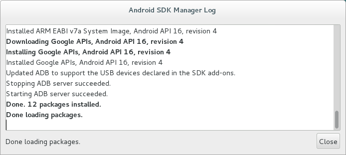
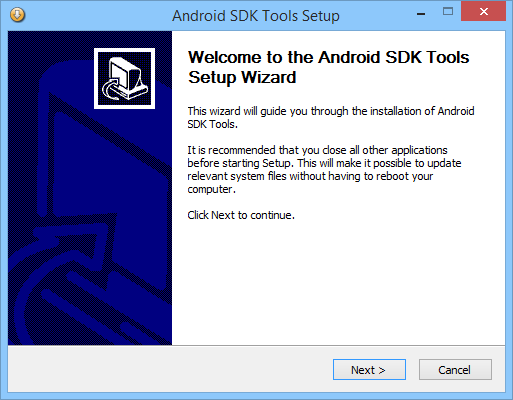
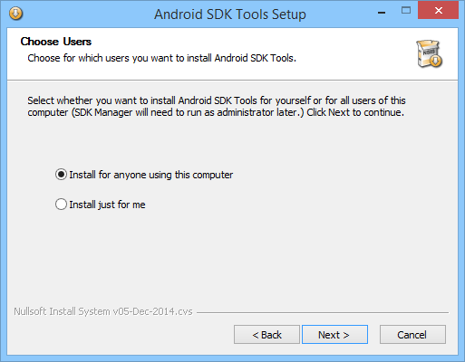
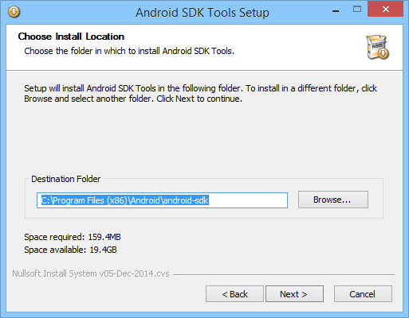
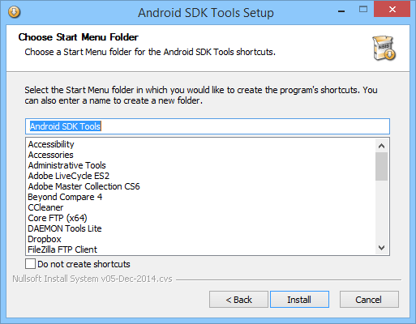
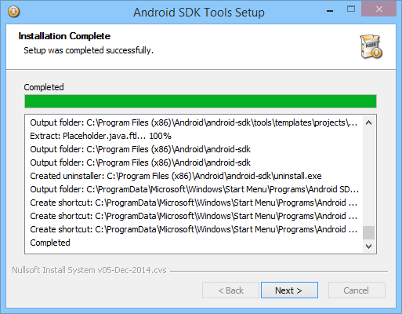
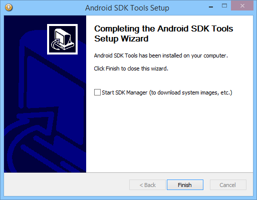
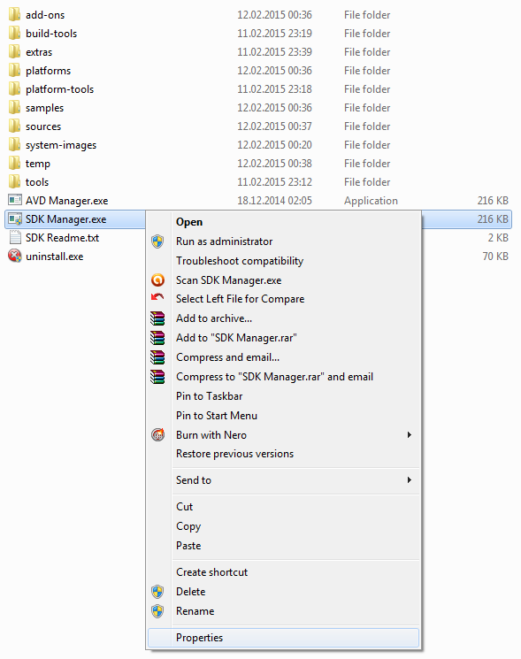
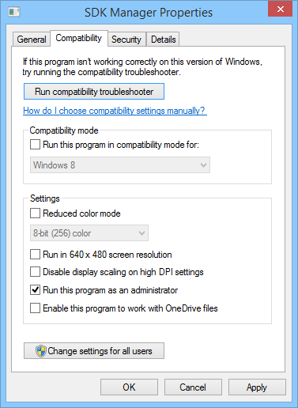

SDK Android
Descărcare
Linux
Se descarcă arhiva .tgz conținând SDK-ul de Android:
student@eim2016:~$ cd /tmp student@eim2016:/tmp$ wget http://dl.google.com/android/android-sdk_r24.4.1-linux.tgz student@eim2016:/tmp$ cd /opt student@eim2016:/opt$ sudo tar xzvf /tmp/android-sdk_r24.4.1-linux.tgz student@eim2016:/opt$ rm -f /tmp/android-sdk_r24.4.1-linux.tgz
Windows
Se descarcă executabilul conținând SDK-ul de Android.
Instalare
Linux
- se lansează Android SDK Manager (cu drepturi de administrator, altfel nu este posibilă descărcarea și instalarea pachetelor necesare), selectându-se nivelul de API pe care vor fi dezvoltate aplicațiile:
student@eim2016:~$ cd /opt/android-sdk-linux/tools student@eim2016:/opt/android-sdk-linux/tools$ sudo ./android
- sunt selectate următoarele pachete:
- Tools
- Android SDK Tools (daca nu a fost instalat anterior) 24.4.1
- Android SDK Platform-tools 23.1
- Android SDK Build-tools 23.0.2
- Android 5.1.1 (API22) - toate pachetele
- Android 4.1.2 (API16) - toate pachetele
- Extras
- Android Support Library 23.1.1
- Google Play Services 29
- Google Play APK Extension Library 3
- Google Play Billing Library 5
- Google Play Licensing Library 2
- se accesează butonul Install packages

- se acceptă termenii și condițiile de licențiere.

- în fereastra de jurnalizare sunt afișate informații cu privire la starea pachetelor instalate

Operațiile de descărcare și instalare pot dura o perioadă de timp mai îndelungată, în funcție de viteza conexiunii la Internet.
Windows
- se lansează în execuție fișierul descărcat, conținând SDK-ul de Android

- se verifică dacă sistemul de operare conține o versiune de JDK, altfel utilizatorul trebuie să precizeze locația la care se găsește aceasta

- se solicită să se specifice tipul instalării

- pentru toți utilizatorii care folosesc sistemul de operare
- doar pentru utilizatorul curent
- se indică locația la care va fi realizată instalarea, spațiul de pe disc care va fi ocupat / disponibil

- se specifică intrarea din meniul de start de unde va putea fi accesat ulterior

- se afișează rezultatele instalării

- în urma completării instalării, există posibilitatea de a lansa în execuție SDK-ul de Android, operație care va fi temporizată până la momentul în care executabilul aferent va primi drepturi corespunzătoare utilizatorului de tip administrator (necesare pentru a descărca și instala definițiile corespunzătoare nivelului de API pentru care se vor dezvolta aplicațiile Android)

- folosind un utilitar de tip gestiune a fișierelor se accesează locația la care a fost realizată instalarea (în cazul de față
C:\Program Files (x86)\Android\android-sdk) - din meniul contextual al fișierului
SDK Manager.exe(click dreapta) se accesează opțiuneaProperties

- în secțiunea
Compatibilityse bifează opțiunea Run this program as an administrator și se definitivează modificările accesând butonul Apply

- se lansează în execuție Android SDK Manager, selectându-se nivelul de API pentru care vor fi dezvoltate aplicațiile, parcurgându-se aceleași etape ca și în cazul Linux.